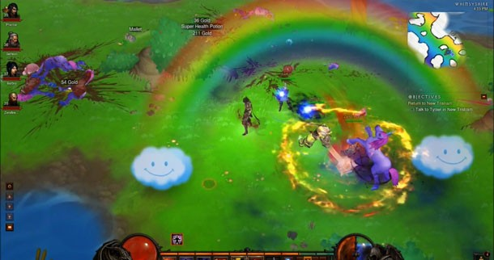

Once you have Wirt's Leg, we can begin the process to unlock the portal to the Secret Cow Level. Take Wirt's Leg to the Blacksmith and Salvage it. You'll get the Map of the Stars item. Return to Adria's Hut in the Ruins of Tristram. There are three dead cows outside.... The path to the Secret Cow Level will now open! For £4 you can buy nothing aswell for ¥4. Everybody like to use €
 Micha van der Meer LinkedIn